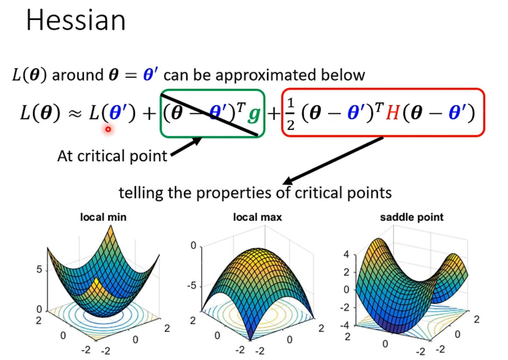
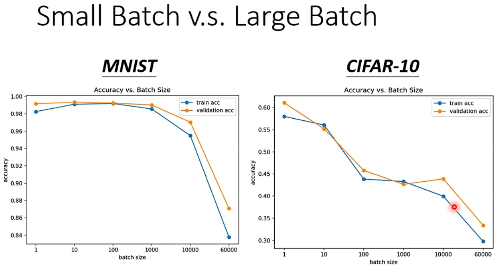
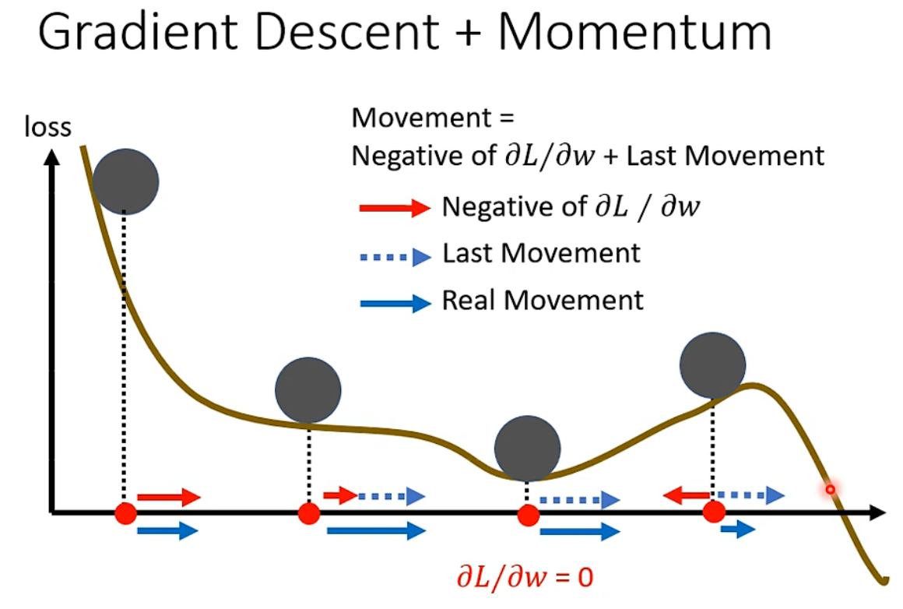
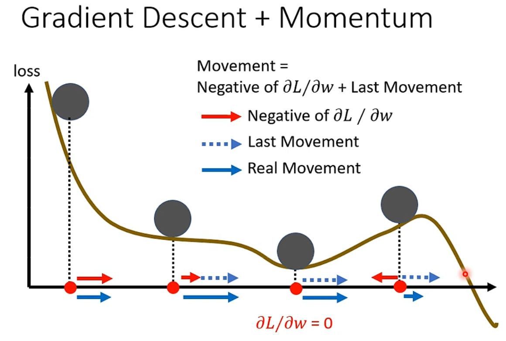

Training loss很高
这时发生了什么
当微分接近0时，训练会停止。但是此时不一定是在极值点，也可能是在鞍点（saddle point）。
其实训练停止时，微分也不一定很接近0，也就不一定是在saddle point，这个后面会提到

通过求loss function的Hessian矩阵，判断Hessian矩阵正定性可以判断当前是否处在saddle point——H不定时则处在saddle point。
对于神经网络的loss而言，Hessian矩阵是一个维度非常高的矩阵，所以Hessian矩阵正定或负定的可能性很低，所以大部分训练停止的情况其实都是遇到了saddle point。
训练方法
Batch
每一个epoch开始时，会随机分割batch，训练时每次依次用各个batch计算出梯度后更新参数。

Batch对训练效率影响
一个很直观的想法是batch越大，训练时在一个batch上花的时间越久，但是由于GPU有并行运算的能力，其实batch在不是特别大的时候训练时间和batch size=1时相比几乎没有增长。所以适当的增大batch可以提高训练效率。

Batch对训练效果影响
从下图可以看出，小batch的训练准确率比较高。
为什么小的batch训练准确率高呢？原因在于使用小的batch时，每个batch之间的loss function可能存在细微的差别，当一个batch训练时卡在saddle point，对另一个batch可能不是saddle point，可以继续训练。

Momentum
训练时可以通过把上一步的移动和当前计算出的梯度结合，形成新的优化参数的方向，这有利于跳出saddle point，甚至可以帮助“翻越”比较小的山坡，使得loss function得到有效降低。
 

Learning rate
其实如果learning rate比较大，那么可能会出现还没到saddle point就停下来的可能（此时梯度的模比0还是会大比较多的），如下图所示，loss function的值在两条绿线所指的点反复横跳。
所以我们需要动态调整learning rate，使得尽量不会出现还没到saddle point就停下来的情况

为了动态调整learning rate，我们可以采取两点
-
对每个参数动态调整learning rate
t代表随着训练轮次而改变，i代表对不同的参数
常见的求
的方法有Root mean square（ ）和RMSProp（ ，比较近的轮次的梯度影响比较大） -
对所有参数进行learning decay
上式中
我们在训练时，经常使用Adam，这个优化方法结合了动态调整RMSProp方法调整learning rate和momentum。一般来说比较有效。
Loss function
选用不同的loss function，会有不同的error surface，所以选择合适的loss function，可以得到更容易进行优化的error surface。

Training data的loss很小
若testing data的loss比training data的loss大很多，也不一定是过拟合~
可能的原因
- 过拟合
- mismatch
过拟合
过拟合的解决方法有两种：
- 降低模型复杂度
- 添加更多数据
降低模型复杂度
e.g 减少神经网络层数
添加更多数据
- 搜集更多数据
- 数据增强（Data augmentation）
-
- 左右翻转图片
- 放大图片局部
- ……
但是数据增强要用合理的方式，比如图片识别不能出现使用中基本不出现的形式，如图片上下颠倒
Mismatch
mismatch指的是testing data的结构与training data的结构不一致
作者: 核子